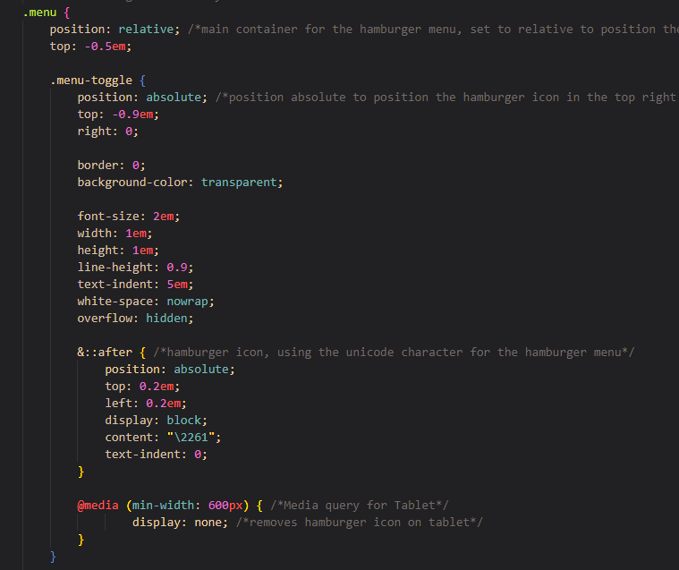
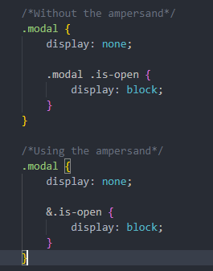

Cascade Layers
Cascade Layers & Nesting

Before we go any further, I want to first provide you with the definition of cascade layers. Kevin Grant, the author of CSS in Depth, Second Edition states ‐ cascade layers are a “new criterion added to the cascade, that allows you to partition your styles into a series of groups called layers.” In other words, you can now organize your CSS styles into sections or layers in the order of importance. This is done by using the @layer rule. For example, say you have layer B and then you create a layer C, layer C's styles will override any conflicting styles that were in layer B regardless of the specificity. This is quite helpful and prevents you from always using !important to override styles. Hopefully, you have a clear picture as to how cascade layers work and why they matter in CSS. However, there's more!
Did you think cascade layers were the only new thing? No! Cascade layers come with a helper ‐ nesting. First, nesting is a new feature that allows you to place one style inside of another style. This feature was released in late 2023 and is supported by the major browsers. By nesting related styles together, it makes styling easier, clean, and reduces repetition. Just think, when you begin working on larger projects, it will be helpful to see at first glance the parent selector and then the children and modifier rules inside the parent block. Another reason to utilize the nested feature, you can nest your @media rules inside the parent selector. I have to say this has helped me a lot. When I first started learning about CSS and media queries, I would always add my queries at the end of my CSS styles, and I found this to be frustrating and overwhelming. However, now, if I know that I need a style to change to make it more responsive, I can just add the @media rule right then and there. Awesome, right?!
By using cascade layers and nesting together, it changes how developers think and organize their stylesheet. Layers provide you with the ability to prioritize styles from lowest to highest priority and then nesting allows you to combine related styles into one block for easier, clean and manageable code. If you are interested in learning more about the cascade layers take a look at this article by Miriam Suzanne, Cascade Layers Guide. This article was last updated in 2025 and it offers valuable information such as the use of !important. I will only briefly touch on this in my article.
Layers and their Functions
As mentioned previously, layers are set up in the order of lowest to highest priority. With that said, I must stress that it is IMPORTANT that you declare your layers at the very beginning of your stylesheet. By doing this, you are telling the browser how it should read your stylesheet from the least or broad of styles to the most important specific styles. The most common naming of layers is:
@layer reset, theme, global, layout, modules, utilities
This list is based on the original recommendation from frontend engineer Stephanie Eckles. Now, moving forward, styles that you add to each of the layers will take precedence over styles that may have been written in earlier layers. This means that your most unique styles will override the style in your base layer because of where it sits in the layer order. But how do you know where to add each of your styles? I will explain.
Let's start with the lowest priority layer ‐ reset and work our way to the highest priority layer ‐ utilities. Firstly, the reset layer is for styles that adjust your user agent styles. This is where you will reset the margins, padding, and fix the box-sizing issues just like you would if you were writing your stylesheet normally, you are now just storing it in a layer. Think of the reset layer as a way of preparing your canvas to work on and making it nice and clean. Our next layer is theme. This layer is where you will define your custom properties specifically for colors that you will be using on your website. This layer is simple and straightforward. Just remember, the theme layer is like picking your colors that you want to use to paint on your new clean and blank canvas. Do you see where I am going with this? Moving on, the next layer is base or global. You will see these used interchangeably so just know they both mean the same thing. This layer contains your default styles such as font, background colors, font colors, headings, and link styles. If you wanted to begin using your custom properties you created in the theme layer, you can.
The next layer is layout. This layer focuses on the page layout such as putting your header, footer, and main content in place. The fourth layer is modules which is where all your reusable code will be placed. Those reusable blocks of code are called modules. Modules are also referred to as components, blocks, or objects which are basically your dropdown menus, modals, banner images, navigation bars, or information cards. Modules are blocks of code that can work on their own and if you make updates to it, it will not have any impact on other elements. You will find that the modules layer contains a good chunk of your code and that is okay! The final layer is the utilities layer. This layer tends to be quite small because it is for helping such as centering text, hiding a display or even updating a border-radius.
How to Properly Nest Styles

Do you know the old saying, “Just because you can, does not mean you always should”? Well, that same statement can be applied when nesting styles in layers. This feature is a great addition when using cascade layers; however, you should use discretion. When nesting CSS styles in layers it is best to only go about 2 to 3 levels deep. Once you are past that, it may be wise to look at your code to see if you need to break it up into smaller reusable code.
Another nesting rule that you should understand is using the ampersand (&) selector which represents the parent selector in the inner selector. The inner selector is referred to as the nesting selector. For example, I will use an example from the book CSS in Depth by Kevin Grant. Look below.

Did you notice in the example of not using the ampersand and using it made the code a little easier to understand. We see that the inner selector of &.is-open is equivalent to .modal.is-open. That is why nesting works well for multiple variants or states of an element such as pseudo-elements, and modifier classes. When nesting, you want to avoid nesting styles that could be by themselves such as styling for elements that are used throughout the site.
I touched briefly on the topic of nesting @media queries and I have to say this is one of the best examples of nesting. Having the ability to nest media queries inside a selector it affects is genius. Just think of how much time you save from not having to scroll through the entire stylesheet just to add a responsive style. This comes in handy when working on big projects and with other team members. Team members can see if responsive styles have been added to selectors and if changes need to be made, they do not have to search through hundreds of lines of code, they can make the changes right then and there. Nesting, if done correctly, can save you and your team much time and stress.
Best Practices
This article has covered quite a bit; however, I hope you were able to gain a little insight into this CSS feature: Cascading Layers and nesting. One thing that I do hope that you take away from this is the importance of declaring your layer order at the very beginning of your stylesheet. This will ensure that your styles are read correctly and placed in order by the browser. With that said, I encourage you to review your layers often to ensure that your styles still make sense and are not getting out of hand due to styles being added.
For nesting, the best practice is to be selective as to where you will use these styles. Remember, the whole point in creating layers is to make your stylesheet is manageable and you create styles that can be reusable regardless of where they stand. Avoid nesting styles too deep because it alerts you to one or more things. You either must look at your code and break it up and/or you will run into specificity issues, you know the thing we were originally trying to avoid by using layers.
Another best practice I highly recommend is choosing names for your layers that are intentional and reflect what styles are listed inside that layer. This is not only helpful to your team but to you in the future. Avoid using names that are vague, stick to the accepted names that I mentioned above such as reset, theme, base or global, layout, modules, and utilities. You never know when you may have to revisit old work, so do yourself a favor and prepare your stylesheet for today and for the future. Cascade layers and nesting are tools that you can use to make your job and life easier.
Remember, these new CSS technologies are still fairly new. With that said, in the developer community you will see how cascade layers and nesting will become more defined and our understanding of how to use these features will become more concrete. Until then, I encourage you to take the time to really put these features to use. Learn as much as possible, it is only going to get better from here!